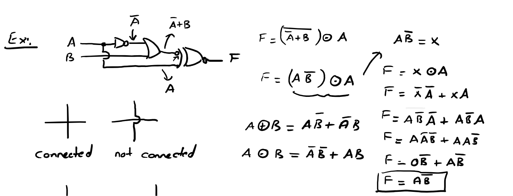

1Kısa tekrar: aksiyomlar
Hoca bu dersin başında 1. dersteki yedi kuralı tekrar yazmış, ama farklı bir sırayla. Numaralara takılma, kuralların kendisini bil.
Hatırlatma: Boole cebirinde sadece 0 ve 1 var. + VEYA (OR), · VE (AND), üst çizgi ya da ' DEĞİL (NOT) demek.
| Kural | Anlamı | Bu dersteki no. | 1. dersteki no. |
|---|---|---|---|
| A + 1 = 1 | 1 ile VEYA her şeyi 1 yapar | 1 | 3 |
| A · 1 = A | 1 ile VE bir şey değiştirmez | 2 | 4 |
| A + 0 = A | 0 ile VEYA bir şey değiştirmez | 3 | 1 |
| A · 0 = 0 | 0 ile VE her şeyi 0 yapar | 4 | 2 |
| A = A | İki kez ters çevirmek eski hale getirir | 5 | 7 |
| A + A = 1 | Bir şey ya doğrudur ya değildir | 6 | 5 |
| A · A = 0 | Aynı anda hem doğru hem yanlış olamaz | 7 | 6 |
Hoca iki derste farklı numara kullandığı için çözümlerde kuralı numarayla değil yazarak belirt. Örneğin "(A + A = 1)" yaz. Bu sitede de kuralları adlarıyla anacağız.
Bu yedi kuralda bir desen var: kurallar çiftler halinde geliyor. Her VEYA kuralının bir VE kardeşi var: A + 0 = A ile A · 1 = A, A + 1 = 1 ile A · 0 = 0, A + A = 1 ile A · A = 0. Bu desenin bir adı var, hemen sonraki bölümde göreceğiz.
2Teorem nedir, neden lazım?
Aksiyomlar kanıtsız kabul ettiğimiz temel kurallar. Teoremler ise bu temel kurallardan türetilen, işimizi hızlandıran kurallar.
1. dersten hatırla: her işlem bir kapı, her kapı para, yer, enerji ve gecikme demek. Teoremler, uzun bir ifadeyi aynı işi yapan daha kısa bir ifadeye çevirmenin araçlarıdır. Bir teoremi doğrulamanın iki yolu var:
- Doğruluk tablosu: İki tarafın tablosunu çıkar, her satırda aynıysa teorem doğrudur. Değişken sayısı az olduğu için bu her zaman mümkün. Kesin ispattır.
- Cebirsel ispat: Bilinen kurallarla bir tarafı adım adım diğer tarafa dönüştür.
Boole cebirinde doğru olan her eşitlikte + ile ·'yı, 0 ile 1'i yer değiştirirsen yine doğru bir eşitlik elde edersin. Değişkenlere ve üst çizgilere dokunulmaz. Örnek: A + 0 = A doğruysa dualı A · 1 = A da doğrudur.
Bu yüzden her teorem iki satır halinde yazılır. Birini bilirsen diğerini kendin bulursun. Ezber yükünü yarıya indirir.
Dikkat: dual alırken gizli parantezleri koru. A + BC'nin duali A(B + C)'dir, AB + C değil.
3Değişme ve birleşme
İlk iki teorem normal cebirden zaten tanıdık. Sıra ve gruplama sonucu değiştirmez.
Teorem 1: Değişme (commutative)
"Yağmur yağıyor VEYA soğuk" ile "soğuk VEYA yağmur yağıyor" aynı anlama gelir. Kapı gözüyle: bir AND kapısının iki girişinin yerini değiştirirsen çıkış değişmez. Bu teorem sayesinde terimlerin sırasını istediğimiz gibi değiştirip benzer olanları yan yana getirebiliriz.
Teorem 2: Birleşme (associative)
Üç şeyi VEYA'larken hangi ikisinden başladığın önemli değil. Bu yüzden parantezi atıp A + B + C ya da ABC yazabiliriz.
Devre açısından önemli bir sonucu var: iki tane 2 girişli AND kapısını art arda bağlamak ile tek bir 3 girişli AND kapısı kullanmak aynı şeydir. Hocanın notundaki 4 girişli AND ve OR sembolleri (9. bölüm) bu teoreme dayanıyor.
Birleşme kuralı sadece aynı işlem art arda gelince geçerli. NAND ve NOR için ise hiç geçerli değil: NAND(NAND(A, B), C) ile 3 girişli NAND(A, B, C) farklıdır (A = B = C = 1 ile dene: ilki 1, ikincisi 0). A + (B · C) ile (A + B) · C farklıdır. A = 1, C = 0 ile dene: ilki 1, ikincisi 0. Farklı işlemler için bir sonraki teorem lazım.
4Dağılma (distributive)
Sadeleştirmenin ana aleti. Birinci hali normal cebirden tanıdık, ikinci hali Boole cebirine özgü ve sınavlarda çok işe yarıyor.
Birinci hal: VE, VEYA üzerine dağılır
Normal cebirdeki çarpmanın dağılması ile aynı: 2 × (3 + 4) = 2×3 + 2×4. Hocanın notundaki oklar A'nın parantezin içindeki her terime "dağıtıldığını" gösteriyor.
Ters yönde kullanımı daha da önemli: ortak çarpan parantezine almak. AB + AC = A(B + C). 1. dersteki AB + AB = B(A + A) adımı bu teoremdi.
İkinci hal: VEYA, VE üzerine dağılır
Bu normal cebirde yok: 2 + 3×4 = 14, ama (2+3)×(2+4) = 30. Boole cebirinde ise doğru. Neden doğru olduğunu iki yoldan görelim.
| A | B | C | A + BC | (A+B)(A+C) |
|---|---|---|---|---|
| 0 | 0 | 0 | 0 | 0 |
| 0 | 0 | 1 | 0 | 0 |
| 0 | 1 | 0 | 0 | 0 |
| 0 | 1 | 1 | 1 | 1 |
| 1 | 0 | 0 | 1 | 1 |
| 1 | 0 | 1 | 1 | 1 |
| 1 | 1 | 0 | 1 | 1 |
| 1 | 1 | 1 | 1 | 1 |
Cebirsel ispat: (A + B)(A + C) = A + BC
- Normal çarpma gibi aç (birinci dağılma hali): AA + AC + AB + BC.
- AA = A (aynı şeyi kendisiyle VE'lemek yine kendisidir; 5. bölümde ayrıntılı): A + AC + AB + BC.
- İlk üç terimde A ortak, parantezine al. A'yı A·1 olarak düşün: A(1 + C + B) + BC.
- 1 + C + B = 1 (1 ile VEYA her şeyi 1 yapar): A · 1 + BC.
- A · 1 = A.
= A + BC
Hoca 12. bölümdeki çözümde tam bunu yapıyor: B + BC = (B + B)(B + C) = 1 · (B + C) = B + C. "Bir değişken + o değişkenin tersini içeren bir çarpım" gördüğünde aklına bu gelsin.
5Tekrar kuralı: A + A = A, A · A = A
Hocanın 4. ve 5. teoremi. İngilizcede idempotent law denir.
"Yağmur yağıyor VEYA yağmur yağıyor" cümlesi "yağmur yağıyor" demektir. Aynı şeyi iki kez söylemek bilgi eklemez. Kontrol: A = 0 iken 0 + 0 = 0, A = 1 iken 1 + 1 = 1 (Boole'da 1 + 1 = 1, unutma!).
Normal cebirde A + A = 2A ve A · A = A² olurdu. Boole cebirinde katsayı ve üs yoktur. Bu yüzden sadeleştirirken ABAB gibi tekrarları hemen AB'ye, AB + AB'yi AB'ye indir.
Bu kural tersine de çalışır: bir terimi ihtiyacın varsa iki kez yazabilirsin. Örnek: ABC + ABC + ABC ifadesinde ABC'yi iki kez kullanmak isteriz: (ABC + ABC) + (ABC + ABC) = BC + AC.
6De Morgan kuralı
Hocanın 6. teoremi. 1. derste tanıştık, burada hoca aynı örneği bu sefer adım adım çözmüş.
"Çizgiyi kır, işareti değiştir." Uzun çizgiyi parçalara böl, her parçanın üstüne kendi çizgisini koy ve aradaki işareti çevir. İki kuralın birbirinin dualı olduğuna dikkat et (+ ile · yer değiştirmiş).
Kural istediğin kadar terime genişler. Hoca bunu 3. sayfada kenara not etmiş: ABC = A + B + C = A + B + C.
İç içe çizgilerde nasıl çalışılır?
- En dıştaki (en uzun) çizgiden başla.
- Çizginin altındaki ifadenin ana işaretini bul. Ana işaret, parantez dışında kalan işarettir.
- Çizgiyi o işaretten kır ve işareti değiştir.
- İki çizgi üst üste geldiyse ikisini birden sil (X = X).
- Hâlâ uzun çizgi varsa tekrarla.
F = A + BC + AC = ?
Hocanın örneği, PDF s.1–2Bu soruyu 1. dersin sonunda çözmüştük. Hocanın bu dersteki çözümü aynı yolu izliyor:
- Sol parça (bir NOR): A + BC = A · BC = A · BC.
- Sağ parça (bir NAND): AC = A + C = A + C.
- Birleştir: F = ABC + A + C. Hoca burada oklarla iki A'lı terimi eşleştirmiş.
- A ortak: A(BC + 1) + C. Hoca BC'yi bir "x" gibi düşünüp x + 1 = 1 yazmış.
- A · 1 + C = A + C.
F = A + C
Hocanın "x + 1" notu önemli bir taktik: bir grup ne kadar karmaşık olursa olsun (BC, AC, …) tek bir harf gibi düşünüp kuralları uygulayabilirsin. 11. bölümde bu taktiği tekrar göreceğiz.
AB ile AB aynı şey değil. Birincisi A + B'ye eşit. Uzun çizgiyi kırınca işaret mutlaka değişir.
7Yutma teoremleri
Bu teoremler hocanın listesinde yok. Ama hocanın teoremlerinden türetilirler ve hem bu dersin örneklerini hem de sınav sorularını çok kısaltırlar. 11. bölümdeki doğru çözüm bunlardan birine ihtiyaç duyuyor.
Neden? A + AB'de A'yı parantezine al: A(1 + B) = A · 1 = A. Sözlü: "A doğruysa zaten doğru. A yanlışsa AB de yanlış." AB terimi A'nın içinde kaybolur, A tarafından "yutulur".
Neden? Dağılmanın ikinci haliyle: A + AB = (A + A)(A + B) = 1 · (A + B) = A + B. Sözlü: "A doğruysa sonuç doğru. A yanlışsa A = 1 olur ve geriye sadece B kalır."
Bu ikinci kural en çok kullanılanı. Hocanın 12. bölümdeki B + BC = B + C adımı bu kuralın bir örneği.
AB + AC + BC = AB + AC. Bir değişken bir terimde düz, diğerinde ters geçiyorsa (burada A), bu iki terimin "kalanlarının" çarpımı (BC) gereksizdir ve silinebilir. Karnaugh haritalarında (4. ders) bunun görsel karşılığını göreceksin.
8Sadeleştirme taktikleri
Sadeleştirmenin tek bir doğru yolu yok, ama hangi sırayla bakacağını bilirsen çok hızlanırsın.
- Uzun çizgileri kaldır. De Morgan ile bütün çizgileri tek değişkenlerin üstüne indir. Çift çizgileri sil.
- Parantezleri aç. Gerekirse dağılma ile her şeyi çarpımlar toplamına (… + … + …) çevir.
- Hemen sıfırlananları sil. İçinde AA geçen her terim 0'dır. Tekrarları teke indir (AA = A, X + X = X).
- Ortak çarpan ara. Terimleri ortak değişkenlerine göre grupla ve parantezine al. Parantezin içinde X + X ya da X + 1 çıkarsa 1 yap.
- Yutmaları kontrol et. Bir terim başka bir terimin içinde tamamen geçiyorsa (A ve AB gibi) büyüğünü sil. A + AB görürsen A + B yap.
- Kalıpları tanı. AB + AB = A ⊕ B, AB + AB = A ⊙ B.
- Sağlama yap. Orijinal ifadeyle sonucun doğruluk tablosu aynı mı? Sınavda en az bir iki satırı yerine koyarak kontrol et.
9Lojik kapılar (gates)
Şimdiye kadar yazdığımız her işlemin bir devre sembolü var. Bu sembollere lojik kapı denir. Girişleri solda, çıkışı sağda çizilir.
Temel kapılar ve çok girişli halleri
Hoca 4 girişli EXOR da çizmiş. Çok girişli XOR'un kuralı: girişlerdeki 1'lerin sayısı tek ise çıkış 1, çift ise 0. Örneğin A = 1, B = 1, C = 1 için A ⊕ B ⊕ C = 1 (üç tane 1, tek). Bu özelliği hata tespitindeki kullanırız: bir veri gönderilirken 1'lerin sayısının tek mi çift mi olduğunu gösteren fazladan bir bit (parite biti) eklenir. Alıcı aynı XOR'u hesaplayıp bir bitin bozulup bozulmadığını anlar.
NAND, NOR, EXNOR: kapı + NOT
Hoca bu üç kapıyı önce iki parça halinde çizmiş (kapı, arkasından NOT), sonra NOT'u ucuna küçük bir balon olarak yapıştırmış. Mantık bu: balon = NOT.
Balon girişte de olabilir: De Morgan'ın çizimi
Balon kapının girişine konursa sadece o girişi ters çevirir. Hocanın notunun sonunda önemli bir şey var: De Morgan sayesinde NAND ve NOR iki farklı şekilde çizilebilir.
Girişlerinde balon olan bir OR görürsen "bu bir NAND" diye düşün. Girişlerinde balon olan bir AND görürsen "bu bir NOR" diye düşün. 12. bölümdeki devrenin son kapısı tam olarak böyle bir kapı.
NAND ve NOR: evrensel kapılar
Sadece NAND (ya da sadece NOR) kapılarıyla her devreyi kurabilirsin. Bu yüzden bunlara evrensel kapı (universal gate) denir. Üretimde tek tip kapı kullanmak ucuzdur, bu yüzden sınavlarda sık sorulur.
| Yapılacak | Sadece NAND ile | Sadece NOR ile |
|---|---|---|
| NOT A | NAND(A, A) = AA = A | NOR(A, A) = A + A = A |
| A AND B | NAND'in çıkışını bir NAND-NOT'tan geçir: AB = AB | Girişleri NOR-NOT ile ters çevir, NOR'la: A + B = AB (De Morgan) |
| A OR B | Girişleri NAND-NOT ile ters çevir, NAND'le: AB = A + B (De Morgan) | NOR'un çıkışını bir NOR-NOT'tan geçir: A + B = A + B |
NOT, AND ve OR yapılabildiğine göre her Boole ifadesi yapılabilir. Örnek: F = AB + CD iki seviyeli NAND ile kurulur: AB ve CD için birer NAND, çıkışları bir NAND'e. Kontrol De Morgan ile: AB · CD = AB + CD.
10Kablolar bağlı mı, değil mi?
Devre şemalarında kablolar sık sık birbirini keser. Kesişen iki kablonun elektriksel olarak birleşip birleşmediğini anlamak zorundasın, yoksa yanlış formül çıkarırsın.
Hoca iki farklı çizim alışkanlığını göstermiş:
Hocanın ilk çiftinde düz "+" kesişim "connected" (bağlı) yazıyor, çünkü o çizimde bağlı olmayan kablolar köprüyle gösterilmiş. İkinci çiftte ise bağlı olan nokta ile gösterilmiş, düz kesişim "not connected". Yani düz kesişimin anlamı, şemanın hangi kuralla çizildiğine bağlı:
- Şemada köprüler varsa: köprü = bağlı değil, düz kesişim = bağlı.
- Şemada noktalar varsa: nokta = bağlı, düz kesişim = bağlı değil.
Güvenli olan şu: nokta görürsen bağlı, köprü görürsen bağlı değil. Hocanın devre örneklerinde ikisi birlikte kullanılmış: kablonun dallandığı yerde nokta, başka bir kablonun üstünden geçtiği yerde köprü var.
11Devreden formül çıkarmak: Örnek 1
Devre analizinin tarifi çok basit: soldan sağa ilerle, her kapının çıkışına formülünü yaz.
- Girişleri (A, B, C…) kabloları boyunca takip et. Noktalarda kablo dallanır, köprülerde dallanmaz.
- Girişleri belli olan ilk kapıdan başla, çıkışının formülünü kablonun üstüne yaz. Hoca bunu küçük oklarla yapıyor (A, A+B gibi).
- Bir kapının girişinde balon varsa o giriş ters çevrilir.
- Bu şekilde son kapıya kadar git. Son kapının çıkışı F'dir.
- F'yi sadeleştir.
Hocanın 1. devresi: girişlere basarak dene
Bu devrenin F'si nedir? Sadeleştir.
Hocanın örneği, PDF s.3Adım 1: formülü kur
- A bir NOT kapısına giriyor: çıkışı A.
- A ve B bir OR kapısına giriyor: çıkışı A + B.
- Bu çıkış son kapıya balonlu bir girişten giriyor, yani ters çevriliyor: A + B.
- A'dan dallanan kablo noktadan ayrılıp aşağı iniyor ve son kapının diğer girişine gidiyor. Hocanın çiziminde B kablosu bu kolun üstünden köprüyle atlıyor, yani bağlı değil. (Sitedeki çizimde köprü dalın üstünde, anlamı aynı.)
- Son kapı XOR şeklinde ve ucunda balon var: XNOR (⊙).
Adım 2: sadeleştir
- De Morgan: A + B = A · B = AB. Yani F = (AB) ⊙ A.
- Hocanın taktiği: karmaşık parçaya bir harf ver. x = AB dersek F = x ⊙ A.
- XNOR'un açılımı (1. dersten; aşağıdaki kutuda da var): x ⊙ A = xA + xA.
- Dikkat, kritik adım: x = AB = A + B (De Morgan). x'i yerine koyarken üstündeki çizgiyi unutma!
- F = (A + B)A + ABA.
- Birinci terim: (A + B)A = A (yutma: X(X + Y) = X). İkinci terim: ABA = AB (AA = A).
- F = A + AB. Ters değişkenli yutma (X + XY = X + Y, burada X = A): F = A + B.
F = A + B = AB. Bütün devre tek bir NAND kapısına eşit!

PDF'te sonuç kutu içinde F = AB diye verilmiş. Hata, x̄Ā terimine x'i yerleştirdiği satırda (yukarıdaki 4. maddede uyardığımız yer): hoca xA terimine x'i koyarken x'in üstündeki çizgiyi düşürmüş ve ABA yazmış. Doğrusu AB · A. O terim 0 değil, A çıkıyor.
| A | B | A+B | F (devre) | A+B | Hoca: AB |
|---|---|---|---|---|---|
| 0 | 0 | 0 | 1 | 1 | 0 |
| 0 | 1 | 0 | 1 | 1 | 0 |
| 1 | 0 | 1 | 1 | 1 | 1 |
| 1 | 1 | 0 | 0 | 0 | 0 |
"F (devre)" ile A+B sütunları her satırda aynı. Hocanın sütunu kırmızı hücrelerde devreden farklı.
Sağlama, ilk satır (A = 0, B = 0): A + B = 1 + 0 = 1, ters çevrilince 0. Son kapı XNOR(0, A = 0): girişler aynı olduğu için 1. Hocanın sonucu AB ise 0 · 1 = 0 veriyor. Yukarıdaki devrede A = 0, B = 0 iken F'nin 1 yandığını kendin görebilirsin.
Sınavda bu soru gelirse doğru cevap A + B. Emin olmak için çözümünü bir iki satır yerine koyarak kontrol et.
XOR ve XNOR açılımları
Hoca bu örneğin yanına iki formül yazmış. Devre sorularında sürekli lazım olacak, ezberle:
Hatırlama yolu: XOR "farklıysa 1" demek. Farklı olmanın iki yolu var: A = 1, B = 0 (AB) ya da A = 0, B = 1 (AB). XNOR "aynıysa 1": ikisi de 0 (AB) ya da ikisi de 1 (AB).
12Devreden formül çıkarmak: Örnek 2
Hocanın en uzun örneği. Bu dersteki neredeyse her teorem burada kullanılıyor. "What is F? Simplify F if possible."
Hocanın 2. devresi: girişlere basarak dene
F nedir? Mümkünse sadeleştir.
Hocanın örneği, PDF s.3Adım 1: formülü kur
- A balonlu bir girişten AND kapısına giriyor, diğer giriş B: çıkış AB.
- AB ve C bir XOR kapısına giriyor: çıkış (AB) ⊕ C.
- B noktadan dallanıp aşağı iniyor ve NOT kapısına giriyor: B. Hocanın çiziminde C kablosu bu kolun üstünden köprüyle atlıyor, yani bağlı değil.
- Son kapı girişleri balonlu bir OR. 9. bölümden hatırla: bu bir NAND. Çıkış: [(AB) ⊕ C] · B. Ya da balonları doğrudan uygula: X = (AB) ⊕ C dersek girişler X ve B = B olur, OR'lanınca F = X + B. Hocanın bir sonraki satırı tam olarak bu.
Adım 2: dış çizgiyi kır (hocanın yolu)
- De Morgan: F = (AB) ⊕ C + B = (AB) ⊕ C + B.
- XOR'u aç. x = AB de: x ⊕ C = xC + xC = ABC + ABC.
- F = ABC + ABC + B.
- De Morgan (+ işaretinden kır): F = (ABC · ABC) + B.
- Her parçayı ayrı aç. Hoca bunları kenara not etmiş: ABC = A + B + C ve AB · C = AB + C.
- F = (A + B + C)(AB + C) + B.
Adım 3: çarp ve temizle
- Her terimi her terimle çarp (6 çarpım): AAB + AC + BAB + BC + CAB + CC + B
- İçinde bir değişkenle tersinin çarpımı olan terimler 0: AAB = 0, BAB = 0, CC = 0. Hoca bunların üstünü çizip 0 yazmış.
- Kalan: F = AC + BC + ABC + B.
- Grupla: ilk ikisinde C, son ikisinde B ortak. F = C(A + B) + B(AC + 1).
- AC + 1 = 1: F = C(A + B) + B = AC + BC + B.
- BC + B kısmına dağılmanın ikinci halini uygula: B + BC = (B + B)(B + C) = 1 · (B + C) = B + C.
- F = AC + B + C. C ortak: C(A + 1) + B = C + B.
F = B + C. Hocanın sonucu ile aynı, doğru.
Sonucun anlamı: F, A'ya hiç bağlı değil! Dört kapılık devre tek bir OR kapısı (ve C için bir NOT) ile yapılabilir.
Daha kısa yol
Yutma teoremlerini bilirsen 2. adımdan sonra daha hızlı biter. Bir şeyin XOR'unun tersi XNOR'dur, yani x ⊕ C = x ⊙ C = xC + xC:
- F = AB C + ABC + B = (A + B)C + ABC + B
- ABC + B = B (yutma, B içinde kaybolur): F = AC + BC + B.
- B + BC = B + C (ters değişkenli yutma), sonra C + AC = C (yutma).
F = B + C
Kullanılmayan giriş: GND
Hoca sadeleşmiş devreyi çizerken A girişini GND'ye (toprak, yani sabit 0) bağlamış. Sebebi: F artık A'ya bağlı değil, ama A kablosu fiziksel olarak orada duruyor. Gerçek entegre devrelerde bir girişi boşta bırakmak sorun çıkarabilir, o yüzden kullanılmayan girişler sabit bir değere bağlanır.
13Özet kâğıdı
Aksiyomlar
- A + 0 = A, A · 1 = A
- A + 1 = 1, A · 0 = 0
- A + A = 1, A · A = 0
- A = A
Hocanın teoremleri
- Değişme: A + B = B + A, AB = BA
- Birleşme: A + (B + C) = (A + B) + C
- Dağılma: A(B + C) = AB + AC
- Dağılma 2: A + BC = (A + B)(A + C)
- Tekrar: A + A = A, AA = A
- De Morgan: A + B = AB, AB = A + B
Ek teoremler
- Yutma: A + AB = A, A(A + B) = A
- A + AB = A + B
- A(A + B) = AB
- Uzlaşı: AB + AC + BC = AB + AC
- Dualite: + ↔ ·, 0 ↔ 1
XOR / XNOR
- A ⊕ B = AB + AB (farklıysa 1)
- A ⊙ B = AB + AB (aynıysa 1)
- A ⊕ B = A ⊙ B
- Çok girişli XOR: 1'lerin sayısı tekse 1
- A ⊕ 0 = A, A ⊕ 1 = A, A ⊕ A = 0, A ⊕ A = 1
Kapılar ve şemalar
- Balon = NOT (uçta ya da girişte)
- Girişleri balonlu OR = NAND
- Girişleri balonlu AND = NOR
- Nokta = bağlı, köprü = bağlı değil
- Kullanılmayan giriş GND'ye
Devre sorusu tarifi
- Soldan sağa git, her kapı çıkışına formül yaz
- Girişteki balonları unutma
- De Morgan ile çizgileri indir, parantezleri aç
- XX = 0 terimleri sil, grupla, yutmaları uygula
- Birkaç satırı yerine koyarak sağlama yap
İngilizce–Türkçe terimler
- theorem
- teorem
- commutative
- değişme özelliği
- associative
- birleşme özelliği
- distributive
- dağılma özelliği
- idempotent
- tekrar kuralı (A + A = A)
- absorption
- yutma
- consensus
- uzlaşı
- duality
- dualite, eşleklik
- gate
- kapı
- bubble
- balon (tersleme dairesi)
- connected / not connected
- bağlı / bağlı değil
- GND (ground)
- toprak, sabit 0
- simplify
- sadeleştirmek
14Alıştırmalar ve test
Önce kâğıtta çöz, sonra çözüme bak. Sadeleştirme sorularında sonucunu 8. bölümdeki araçla da kontrol edebilirsin.
Çözümlü alıştırmalar
- A(B + C) = AB + AC hangi teoremdir?
Çözümü göster
Dağılma (distributive), birinci hali.
- (A + B)(A + B) ifadesini sadeleştir.
Çözümü göster
Dağılmanın ikinci hali: A + BB = A + 0 = A.
- AB + A(B + C) ifadesini sadeleştir.
Çözümü göster
Aç: AB + AB + AC. Tekrar kuralı: AB + AC. A ortak: A(B + C).
- AB + AB + AB ifadesini sadeleştir.
Çözümü göster
İlk ikisi: A(B + B) = A. Kalan: A + AB. Ters değişkenli yutma (X = A): A + B.
- AB + B ifadesini sadeleştir.
Çözümü göster
De Morgan: A + B + B. Tekrar kuralı: A + B.
- A + B · (A + C) ifadesini sadeleştir.
Çözümü göster
De Morgan: AB(A + C) = AAB + ABC = AB + ABC. Yutma: AB.
- AB + C ifadesini uzun çizgi kalmayacak şekilde yaz.
Çözümü göster
Önce + işaretinden kır: AB · C. Sonra AB = A + B: (A + B)C = AC + BC.
- A ve B bir NAND kapısına giriyor. NAND'in çıkışı ve C bir NOR kapısına giriyor. F nedir? Sadeleştir.
Çözümü göster
NAND çıkışı AB. NOR: F = AB + C. De Morgan: AB · C = ABC.
- (A + B)(A + C) = A + BC eşitliğini cebirsel olarak ispatla.
Çözümü göster
AA + AC + AB + BC = A + AC + AB + BC = A(1 + C + B) + BC = A + BC. Ayrıntısı 4. bölümde.
- F = (A + B) ⊕ A ifadesini sadeleştir. (İpucu: x = A + B de.)
Çözümü göster
x ⊕ A = xA + xA. xA = (A + B)A = AA + BA = AB. xA = ABA = 0. Sonuç: AB.
- 3 girişli XOR için A = 1, B = 1, C = 1 iken çıkış kaçtır?
Çözümü göster
Üç tane 1 var, tek sayı → 1. Adım adım: 1 ⊕ 1 = 0, 0 ⊕ 1 = 1.
- Girişlerinde balon olan bir AND kapısına A ve B giriyor. Çıkışı tek bir kapı adıyla söyle.
Çözümü göster
A · B = A + B (De Morgan) → NOR.
- Aşağıdaki devrenin F'sini bul ve sadeleştir. (Noktalar bağlantı, köprü bağlantı değil.)
Çözümü göster
Üst AND: A ve (balon yüzünden) B → AB. A'nın dalı B'ye bağlı değil (köprü), alt AND'e gidiyor: AC. OR: F = AB + AC = A(B + C).
- F = (A + B)C devresini çiz.
Çözümü göster
A ve B bir OR kapısına girer. C bir NOT kapısından geçer (ya da AND'in o girişine balon koyarsın). OR'un çıkışı ile C bir AND kapısına girer, çıkışı F.
- Sadece NAND kapılarıyla A OR B yap.
Çözümü göster
A'yı NAND(A, A) ile, B'yi NAND(B, B) ile ters çevir. Sonra NAND(A, B) = AB = A + B (De Morgan). Toplam 3 NAND.